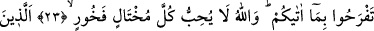

CENNETE KOŞUŞUN
21. Rabbinizden bir mağfirete; Allah’a ve peygamberlerine inananlar için
hazırlanmış olup genişliği gökle yerin genişliği kadar olan cennete koşuşun. İşte bu,
Allah’ın lütfudur ki onu dilediğine verir. Allah büyük lütuf sâhibidir.
22. Yeryüzünde vuku bulan ve sizin başınıza gelen herhangi bir musîbet yoktur ki,
biz onu yaratmadan önce, bir kitapta yazılmış olmasın. Şüphesiz bu, Allah’a göre
kolaydır.
23. (Allah bunu) elinizden çıkana üzülmeyesiniz ve Allah’ın size verdiği
nimetlerle şımarmayasınız diye açıklamaktadır. Çünkü Allah, kendini beğenip
böbürlenen kimseleri sevmez.
24. Onlar cimrilik edip insanlara da cimriliği emrederler. Kim yüz çevirirse
şüphesiz ki Allah zengindir, hamde lâyıktır.
Meydanda rakiplerini geçmeğe çalışan yarışçılar gibi Allah’ın vaad etmiş olduğu
büyük bir mağfirete, istiğfar ve diğer sâlih ameller gibi sebeplere koşun. Yoksa yalnız
amelin kendisi mağfireti kazandırmaz. Nitekim Peygamberimiz (s.a.) duâsında
“Allah’ım senden mağfireti kazandıracak sebepleri dilerim.” derdi.[270] Yâni Allah’ın
izniyle sâhibini mağfiret ettiren amelleri yapmağa beni muvaffak kılmanı dilerim!
İmamla birlikte namazın birinci tekbirine ve benzeri ibâdetlere koşuşmak da bu âyet-i
kerîmenin emri kapsamına girer.
Sülemî (k.s.) demiştir ki; “Hz. Peygamber (s.a.) mağfiret vesîlesidir. Hak Teâlâ
buyuruyor ki: Ona uyma konusunda acele ediniz, çünkü o rahmet ve bağışlanma
sebebidir.”